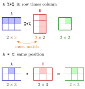

Matrix Algebra in R¶
Definition¶
Matrix algebra in R uses a small set of operators and functions that follow the rules of linear algebra. For numeric matrices A and B:
| Mathematics | R | Requirement |
|---|---|---|
| matrix product | A %*% B |
ncol(A) == nrow(B) |
| sum, difference, entry-by-entry product | A + B, A - B, A * B |
same dimensions |
| scalar multiple | c * A |
none |
| transpose | t(A) |
none |
| determinant | det(A) |
square |
| inverse | solve(A) |
square and invertible |
| eigenvalues and eigenvectors | eigen(A) |
square |
| outer product | x %o% y or outer(x, y) |
vectors |
The function diag() has three uses: diag(n) for a whole number n gives the identity matrix, diag(v) for a vector v of length at least two gives the diagonal matrix with v on the main diagonal, and diag(A) for a matrix A returns its diagonal entries as a vector.
Interpretation¶
R understands matrix algebra directly, so a formula such as becomes one line, t(A) %*% A, which runs in fast compiled code instead of a hand-written loop. The one distinction to keep in mind at all times is between the matrix product %*% and the entry-by-entry product *.

In the top row, A %*% B combines row 1 of A with column 2 of B into entry of the result, a sum of three products. This needs the inner sizes to match (the two orange 3s), and the result takes the outer sizes: times gives . In the bottom row, A * C multiplies entries in the same position, so both matrices and the result share one shape.
When unsure whether an expression is valid, check dim() of both sides first. In A %*% x a vector counts as a column, giving the matrix-vector product of Math II, and %*% always returns a matrix, even a one. solve() and eigen() compute the inverse and the eigenvectors you would find by hand, but in floating-point arithmetic, so a determinant of may be stored as . Linear systems are the topic of Solving Linear Systems in R.
The common mistake is writing A * B or A * x when the matrix product is meant. For square matrices of equal size A * B gives no error, and A * x silently recycles x down the columns, so a wrong answer looks perfectly normal (Example 1).
Key Results¶
A %*% Bis defined exactly whenncol(A) == nrow(B); the result hasnrow(A)rows andncol(B)columns. Otherwise R stops with the errornon-conformable arguments.+,-and*between two matrices work entry by entry and need equal dimensions; with a single number they act on every entry; with a shorter vector they recycle it down the columns instead of forming a matrix product.diag(3)is the identity,diag(c(1, 2, 3))is a diagonal matrix, anddiag(A)extracts the diagonal ofA. A vector of length one is read as a size:diag(4)is the identity, not the matrix .solve(A)returns for a square invertible matrix, andeigen(A)returns a list with$values(sorted from largest to smallest: by value for a symmetric matrix, by absolute value otherwise) and$vectors(unit-length eigenvectors in the columns, in the same order).outer(x, y, FUN)builds the matrix with entry equal toFUN(x[i], y[j]); with the defaultFUN = "*"it is the outer productx %o% y.
Examples¶
1. Matrix product versus entry-by-entry product. Take the matrices filled column by column from 1:9 and from c(1:8, 10):
A <- matrix(1:9, nrow = 3, ncol = 3)
B <- matrix(c(1:8, 10), nrow = 3, ncol = 3)
A %*% B
#> [,1] [,2] [,3]
#> [1,] 30 66 109
#> [2,] 36 81 134
#> [3,] 42 96 159
A * B
#> [,1] [,2] [,3]
#> [1,] 1 16 49
#> [2,] 4 25 64
#> [3,] 9 36 90
x <- c(1, 2, 3)
A %*% x
#> [,1]
#> [1,] 30
#> [2,] 36
#> [3,] 42
A * x
#> [,1] [,2] [,3]
#> [1,] 1 4 7
#> [2,] 4 10 16
#> [3,] 9 18 27
Entry of A %*% B is row 1 of A times column 1 of B: . Entry of A * B is just . The last line is the trap: A * x multiplies row of A by x[i] through recycling and returns a matrix, while the matrix-vector product needs %*%.
2. Three uses of diag().
diag(3)
#> [,1] [,2] [,3]
#> [1,] 1 0 0
#> [2,] 0 1 0
#> [3,] 0 0 1
diag(c(1, 2, 3))
#> [,1] [,2] [,3]
#> [1,] 1 0 0
#> [2,] 0 2 0
#> [3,] 0 0 3
diag(matrix(1:16, nrow = 4))
#> [1] 1 6 11 16
diag(4)
#> [,1] [,2] [,3] [,4]
#> [1,] 1 0 0 0
#> [2,] 0 1 0 0
#> [3,] 0 0 1 0
#> [4,] 0 0 0 1
The third call extracts the diagonal of the matrix filled with 1:16. The last call shows the length-one rule: the single number 4 is read as a size.
3. Transpose, determinant, inverse and eigenvalues. With B from Example 1:
t(A)
#> [,1] [,2] [,3]
#> [1,] 1 2 3
#> [2,] 4 5 6
#> [3,] 7 8 9
det(B)
#> [1] -3
print(det(B), digits = 17)
#> [1] -2.9999999999999969
det(B) == -3
#> [1] FALSE
solve(B)
#> [,1] [,2] [,3]
#> [1,] -0.6666667 -0.6666667 1
#> [2,] -1.3333333 3.6666667 -2
#> [3,] 1.0000000 -2.0000000 1
round(B %*% solve(B), 10)
#> [,1] [,2] [,3]
#> [1,] 1 0 0
#> [2,] 0 1 0
#> [3,] 0 0 1
eigen(B)$values
#> [1] 16.7074933 -0.9057402 0.1982469
By cofactor expansion, , which is non-zero, so B is invertible. R prints -3, but the stored value is off in the fifteenth digit, so the test det(B) == -3 is FALSE; compare rounded values instead. The product B %*% solve(B) is the identity up to rounding errors of about , which round() hides. The eigenvalues add up to the trace and multiply to .
4. Sums and outer products as matrix operations. The sum of is the product with the all-ones vector , and the outer product of and is a matrix:
x <- c(10, -4, 12, 2, -3, 9, 5)
i <- rep(1, length(x))
t(i) %*% x
#> [,1]
#> [1,] 31
as.numeric(t(i) %*% x)
#> [1] 31
c(2, 4, 6) %o% c(1, 3, 5)
#> [,1] [,2] [,3]
#> [1,] 2 6 10
#> [2,] 4 12 20
#> [3,] 6 18 30
outer(1:3, 1:4, "+")
#> [,1] [,2] [,3] [,4]
#> [1,] 2 3 4 5
#> [2,] 3 4 5 6
#> [3,] 4 5 6 7
The first product is a matrix, printed with row and column labels; as.numeric() turns it into an ordinary number. With "+" instead of the default multiplication, outer() builds the table of all sums x[i] + y[j], the same table that lists the totals of two dice in Monte Carlo Simulation.
Prerequisites¶
Related Concepts¶
- Solving Linear Systems in R
- Loops versus Vectorization
- Vector Recycling
- Determinant
- Inverse and Singular Matrices
- Eigenvalue and Eigenvector
- Identity Matrix
- Diagonal Matrix
Sources¶
- Programming for EOR · Week 5
- Lecture 5 script, Matrix operations, random numbers and optimisation, sections "Constructing matrices and special matrices" and "Basic matrix algebra"; Solutions Week 5, exercises 2–5
Aliases: %*%, matrix multiplication in R, t(), diag(), det(), solve(), eigen(), outer(), %o%, matrix operations in R Keywords: matrix product, elementwise product, transpose, determinant, inverse, eigenvalues
Last updated: 10 November 2026 16:43
Matrix Algebra in RSolving Linear Systems in RMatrices in RVectorized OperationsMatrix ProductTransposeLoops versus VectorizationVector RecyclingDeterminantInverse and Singular MatricesEigenvalue and EigenvectorIdentity MatrixDiagonal Matrix